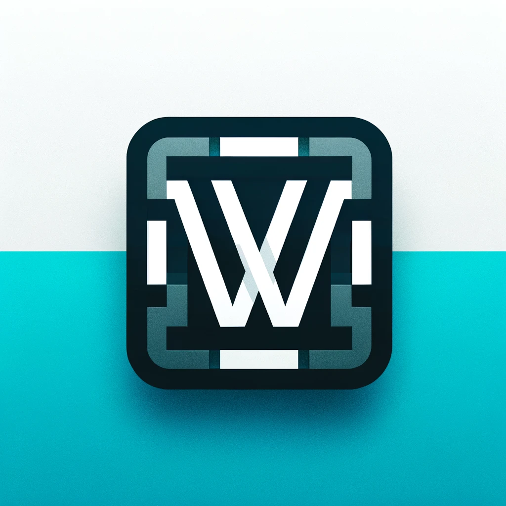

Max Witalec
Software Developer
Hello!👋
I'm Max Witalec, a junior software developer focused on building next level applications
About Me
In 2018, I delved into software engineering, contributing to impactful projects and roles.
Currently a System Administrator at Web World Ireland, I've improved support quality and managed
efficiency-boosting projects. As an Infrastructure Engineer Intern at Susquehanna International Group,
I worked on the development of a time-saving automated
roll call system and worked on a web app for active directory management.
Beyond coding, I'm passionate about Formula 1, music production, and go karting. I look forward to future
challenges and contributions in the dynamic world of software engineering.
Work Experience
Infrastructure Engineer • SIG 
January 2023 - September 2023
Developed an automated roll call system for daily calls as a part of a group project which saved over 60 hours a week for the infrastructure department. Worked on a web application which allowed users to manage active directory groups and users for the whole technology department. Actively participated in engineering practices such as code reviews, environment strategy and managing CI/CD workflows. Collaborated with multiple teams through out the internship to develop the group and personal project
System Administrator • Web World Ireland
March 2018 - January 2023
September 2023 - Present
Advised level 2 and level 3 engineers on potential process improvements to increase support quality and expedite ticket fulfilment. Configured hardware, devices and software to be set up for employees and clients. In charge of organizing small to medium scale jobs which help the efficiency and performance of the company. Documented all ticket resolutions and drafted troubleshooting guides for each team with images, descriptions and strategies. Managed work tickets, prioritizing urgent needs and communicating plans with all customers within 24 hours
Projects
Email Setting Finder 📧
Developed this web application while working for Web World Ireland, as we have a huge amount of clients, I wanted to automate the process of finding email settings for clients. A user can enter the website and put their email address in to return correct email settings.
Flask cPanel Python API
Network Status Website (WIP) 🛜
Built a network status page for Web World Ireland which is hosted on Heroku and independent from our data centre to ensure uptime in the unlikely case of down time. It checks each of our servers, checking HTTP, POP3, FTP and uptime. The website refreshes every 30 seconds with newest updates.
Flask Heroku cPanel Redis Python API
Hotel Booking Website 🏨
Hotel booking website built in Django framework. This project was developed as a part of our curriculum in second year and wanted us to demonstrate the knowledge we gained about Django. We decided to take a challenge with setting up a booking system as that aspect was never showed to us and we were confident we would be able to implement it.